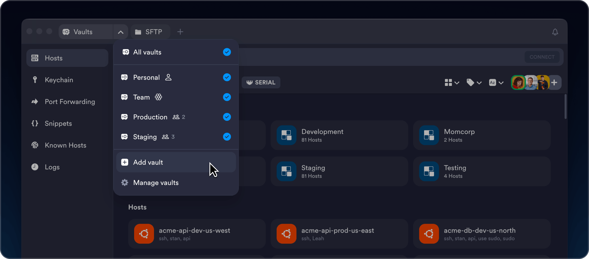

为什么Termius不做文件夹？Vaults架构背后的设计取舍
从传统SSH客户端用文件夹分组的惯性出发，拆解Termius Vaults为何选了加密容器这条路，以及这套设计在移动时代付出的代价与带来的收益。
我用过的SSH客户端不少了——PuTTY、Xshell、iTerm2、SecureCRT，甚至纯命令行的ssh加个~/.ssh/config。它们有一个共同的习惯：把服务器按文件夹分组。「生产环境」「测试环境」「客户A」，一层一层往下套。直观，不用学，点开就能找。
但Termius偏不，你从官方下载渠道拿到的安装包里，打开第一眼看到的就不是文件夹树，而是一排Vault标签。Personal Vault、Team Vault，再往下是你自己建的Production Vault、Staging Vault。每个Vault是独立的、带加密的、跟权限绑定的容器。
这就引出一个问题：为什么？ 文件夹用得好好的，为什么要另起炉灶搞一个更复杂的模型？我翻了好几篇Termius文档里的架构解析和安全模型说明，也去它的官网看了一圈产品介绍，才慢慢琢磨出背后的逻辑——这根本不是一个"SSH客户端"，它是把远程访问这件事当成了一个需要跨设备、跨团队同步的加密资产管理问题来做的。
Vaults到底是什么：从文件夹到保险库的范式切换
先把Vaults拆开看。样本里有句话说得很准——Vaults之间完全隔离。每个Vault里装着Hosts（主机配置）、Groups（分组）、Keys（密钥对）、Credentials（凭证）、Snippets（命令片段）、Port Forwarding rules（端口转发规则）、Known Hosts（主机指纹）。这些东西在Vault A里和Vault B里互不可见。
这和文件夹的本质区别在哪？文件夹是视图，Vault是边界。文件夹只是帮你把东西组织起来，但文件夹本身没有任何安全属性——你把服务器丢到「生产环境」文件夹，不代表这个文件夹有密码、有访问控制。而Vault从设计第一天起就自带两个东西：加密密码和权限列表。
Vault的加密密码你创建账号时就设了，但Termius的云端永远看不到这个密码。这意味着什么？你的所有SSH密钥、服务器地址、Snippets命令，在离开你设备的那一刻就已经是密文了。云存储里躺着的只是一堆你自己加密过的blob。Termius的服务器根本没能力读它——这就是端到端加密。
三种Vault，对应三种信任边界
Termius把Vault分成了三类，这个分类本身就很说明问题：
Personal Vault是默认自带的，你删不掉。它就是给你自己用的——测试服务器、临时SSH隧道、还没准备好共享的密钥。Starter免费版里Personal Vault只能本地存，不同步到云端；Pro版才开启云同步。这个设计很有意思——免费版不云同步，恰恰等于免费版没有端到端加密的云通道，因为没有数据要上传。
Team Vault只在Team/Business版里出现，一旦你邀请了第一个队友，它自动生成。默认全员可见、完全访问。团队共用的Snippets库、开发环境服务器、共享端口转发规则都往里塞。
自定义Vault是手动创建的细粒度权限工具。样本里举了一个SaaS公司的例子：Production Vault只给DevOps团队，Development Vault全员可见，Staging Vault给DevOps加QA。这时候Vault就不只是"存东西的地方"，它变成了权限单元——你登录Termius后能看到哪些服务器、哪些密钥，完全取决于你在几个Vault里被授予了什么权限。

这才是为什么不用文件夹：文件夹做不了权限隔离。传统SSH客户端里，如果我要把一组服务器只开放给运维，我得手动把每个密钥文件的权限设成700、把配置文件挪到共享盘、再用文件系统权限控制谁能读——一套组合拳下来还容易出漏洞。Vault把这件事下沉到了应用层，你在UI里拖一下、勾几个成员就搞定了。
跨设备同步是一把双刃剑
Vaults的另一个核心价值是跨设备同步——手机、桌面、平板，同一套Vault数据自动过去。这个功能在Pro版解锁，也是$10/月Pro档最硬的卖点。
但这里有个容易被忽略的代价：加密密码的分发问题。Termius要求你在每台新设备上都重新输入Vault的加密密码来解密。这很安全——没人能绕过你把数据从云端拉下来——但也意味着你换设备时多了一个步骤。更麻烦的是，如果你忘了这个加密密码，Termius自己也帮不了你，因为云端根本没存明文。
我实际用下来发现，很多人第一次遇到这个坑是在换手机的时候：旧手机登着好好的，新手机装完Termius输入账号密码之后卡在"请输入Vault加密密码"，然后才想起来当初设完就忘了。样本里安装指南特意提了一句"加密密码一定要记好"，这句话不是礼貌性提醒，是有用户真的因此丢了全部主机配置。
硬件密钥为什么要做到移动端
Vaults把安全边界推到了移动端——既然手机上也存着你的SSH密钥、能直接连生产服务器，那手机丢了怎么办？Termius给出的答案是把FIDO2硬件密钥支持做到了移动端。
样本里MFA那篇有个细节值得注意：YubiKey通过USB OTG连Android手机，就能直接在Termius里触发FIDO2认证。私钥烧在YubiKey硬件里，永远导不出来——就算我手机被root、被恶意软件扫描Termius的沙箱，也拿不到私钥。连接服务器时必须物理按一下YubiKey才放行。
这个设计的妙处在于它统一了桌面和移动的安全模型。传统SSH客户端的硬件密钥支持基本只在桌面端，手机端要么简化要么放弃。Termius因为Vaults的存在，手机和桌面在安全等级上是同构的——所以它不能在手机上开后门，必须做到和桌面一样的FIDO2防护。代价也很明确：你得随身带个YubiKey，而且USB OTG转接头是刚需，否则硬件密钥在Android端用不了。
Vaults架构的天然边界：谁该用、谁不该用
说了这么多Vaults的好处，它也有明显的适用边界。
适合的场景：你有超过一台设备需要SSH、你在小团队里、你对服务器安全有基本要求、你不想把SSH密钥散落在IM聊天和密码管理器里。Vaults的价值正好在这些点上——跨设备同步帮你省了手动同步配置的麻烦，权限隔离帮你省了文件系统权限配置的麻烦，端到端加密帮你省了密钥泄露的风险。
不太适合的场景：纯单机运维——就一台电脑、就几台自己的服务器、不需要跟任何人协作。这时候Vaults的所有优势都用不上，反而多了一个加密密码要记，多了一个云账号要维护。文件夹加~/.ssh/config就够了，没必要为了架构美感花$10/月。
还有一个场景值得单独说：完全离线的环境。如果你的服务器是物理隔离的内网、设备也连不上外网，那Vaults的云同步完全废掉，Starter版的本地Vault存储倒是能凑合，但Team Vault和自定义Vault的权限隔离也就没了意义——因为没地方同步、没地方分发权限。
写在最后
Termius选Vaults而不是文件夹，本质上是把SSH客户端从「本地工具」重构成了「加密资产的多端同步容器」。这个选择让它在移动时代活得很好——手机连服务器、团队共享密钥、硬件密钥防护，这些都是传统SSH客户端到今天还没解决好的问题。
但它也有代价：你必须接受一个云账号、必须记好加密密码、必须付费才能用跨设备同步。这些对老派运维来说可能是不可接受的侵入性设计。
我自己现在的用法是：桌面端Pro版开云同步存Production Vault，手机Android版连同一套Vault做应急运维，Personal Vault里放测试用的临时服务器。Vaults的权限隔离帮我把私人测试和工作用服务器彻底分开了，不用担心误操作连上生产。硬件密钥在桌面和手机上都配了，虽然随身带个YubiKey有点麻烦，但想到手机丢了也没人能碰我的生产SSH，这点麻烦就值了。
跨五个平台全覆盖是它的另一个加分项——Windows走微软商店、macOS用Homebrew Cask、Linux直接AppImage免安装，Android在Google Play搜一下就有，不用折腾第三方市场。
这次整理Vaults架构、加密模型、硬件密钥支持这些资料，我分别放到了GitHub、Gitee和GitCode三个仓库里，选哪个访问都一样，内容是同步的。